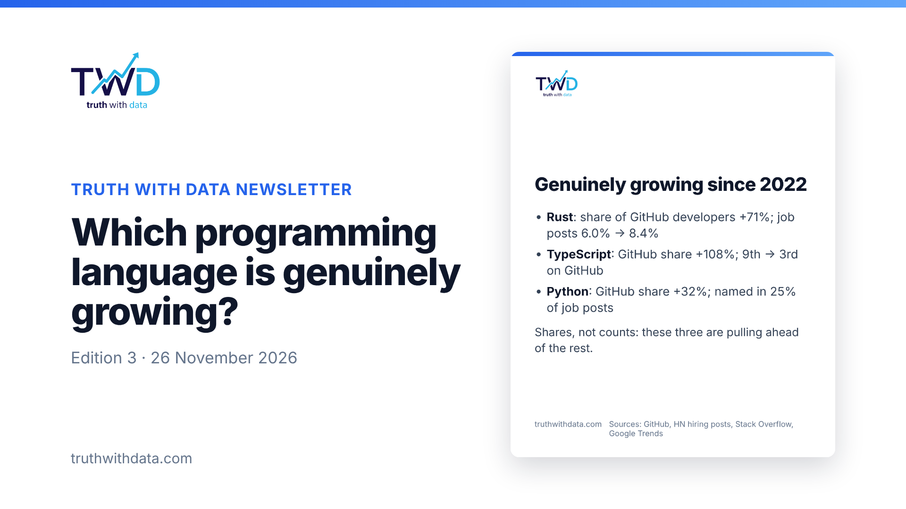

Title: Which programming language is genuinely growing? I checked five signals
Cover image (download, then upload as the edition's cover): 
Body: select everything inside the dashed box below, copy, and paste into the LinkedIn editor under the title. Headings, bold and links carry over.
SEO title (Publishing menu → SEO): Which programming language is growing? Five signals, 2026
SEO description: Rust, TypeScript and Python are the only languages gaining share of real code and job posts since 2022. Stack Overflow questions are down 98.7%.
Text for the post that goes out with it (the box LinkedIn shows when you press Publish):
Stack Overflow had 98.7% fewer new questions this year than in the same months of 2019. Most "most popular language" rankings are built on numbers like that, so they now mostly measure who moved to AI assistants first.
This week's edition ranks 17 languages on what people actually do instead: code on GitHub and job posts. Only three have gained ground since 2022.
Every week this newsletter takes one question people argue about and answers it with public data, with the method shown. This week: which programming language is actually growing, as opposed to being talked about more?
Search "most popular programming language" and you get a dozen confident lists. Most rest on one number: how often a language is searched for or asked about on Stack Overflow. That worked while developers searched and asked. It doesn't now. From January to October 2026 Stack Overflow received 19,801 new questions, against 1,474,916 in the same months of 2019, a fall of 98.7%. When every language's questions collapse together, a ranking built on them mostly shows which communities moved to AI assistants first.
I tracked 17 languages on signals that reflect work as well as attention: the share of developers pushing code in each language on GitHub, the share of mentions in 82,138 Hacker News hiring posts, the share of developers in the Stack Overflow survey who want to work with it, and Google searches. I compared the 12 months to October 2022, the last full year before ChatGPT, with the 12 months to October 2026. Everything is a share, not a count, because GitHub's developer base roughly quadrupled and nearly every language gained developers.
Only three languages clearly gained ground. Rust's share of GitHub developers rose 71% and its share of job posts went from 6.0% to 8.4%. TypeScript's GitHub share more than doubled (+108%), taking it from 9th to 3rd. Python's GitHub share grew 32% and it is again the language most often named in job posts, at 25%.
Losing share isn't dying. Java's share of GitHub developers fell 39%, yet the number of developers writing Java grew 41%. Java, C#, Ruby and PHP are a smaller share of what's new each year, but they still fill a lot of jobs, especially in enterprise and finance work.
Searches point the wrong way. Across the languages popular enough to measure, the change in Google searches moved against the change in hiring and learning (rank correlation −0.38). The signal most rankings are built on is the least reliable one.
The next two years lean towards Rust and Go. When far more developers want a language than use it, its use tends to grow. Tested on surveys from 2017 to 2024, that gap called the direction of the next two years correctly for 71% of languages. Applied to 2026 it leans towards Rust and Go, and away from PHP, JavaScript and Java. Go is losing GitHub and job-post share today, so its enthusiasm isn't showing up in work yet.
If you're choosing a first language, nothing in the data argues against Python. For the web, learn TypeScript rather than just JavaScript. If you already code and want the growth market, Rust rose on every signal, though from a small base. And whatever you choose, the biggest change in job posts isn't a language: posts mentioning LLMs or generative AI went from 0.3% in 2022 to 15.6% in 2026.
No signal is the whole labour market. GitHub over-represents open-source and student code and under-represents private enterprise code, where much Java and C# lives. Hacker News leans towards US startups. The survey sample shrank from 70,975 in 2022 to 13,924 in 2026. AI assistants may also push up Python and TypeScript counts on GitHub. That's why I combined the signals and reported where they disagree. The forecast is a lean, not a certainty.
The article has the full scoreboard for 17 languages, the UK, US and India compared, and the code. The free checker ranks languages for your country and the kind of work you want to do.
Read the analysis · Use the Language Momentum Checker
The code (Python and R) is public: github.com/truthwithdata/analysis
Want one chart a week in your inbox, every Sunday? Sign up at truthwithdata.com. It's free.
If your team is deciding what to train people in next year, Python, R, SQL or statistics, book a free 30-minute call.
Vishal